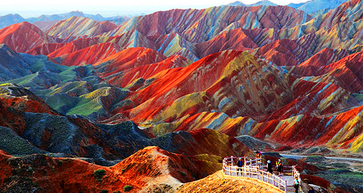
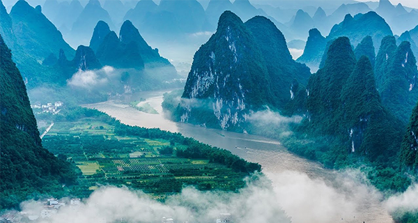
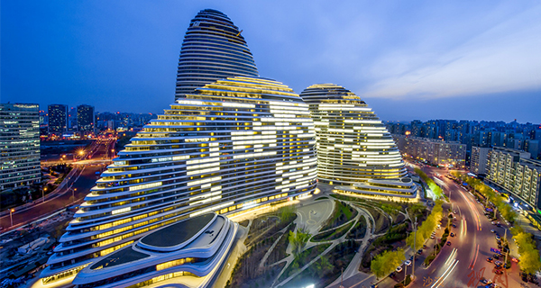
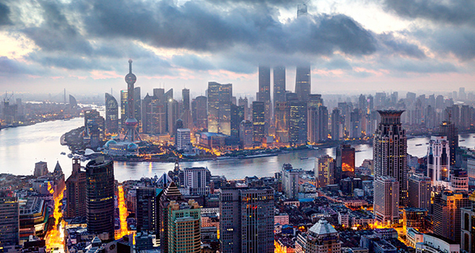
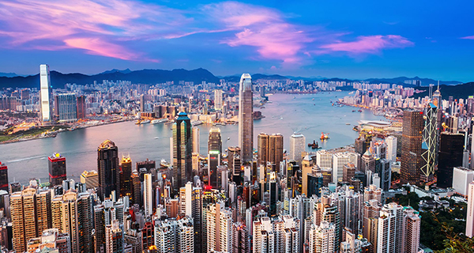
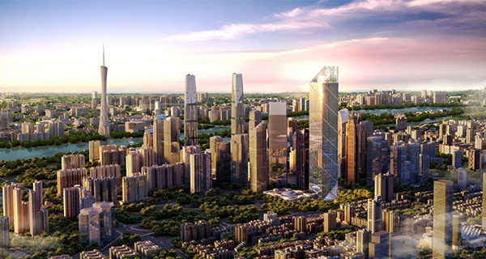

Welcome to China
Nature




City




History


The Zhangye National Geopark is located in Sunan and Linze counties within the prefecture-level city of Zhangye, in Gansu, China. It covers an area of 322 square kilometres. The site became a quasi-national geopark on April 23, 2012.